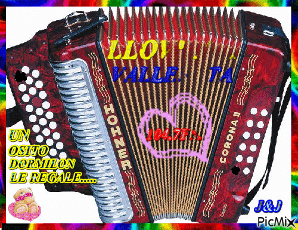

<
FESTIVAL DEL VALLENATO

El festival de música vallenata más importante de Colombia es el Festival de la Leyenda Vallenata,
que se celebra desde 1968 en Valledupar, Cesar. En él se premia al mejor ejecutante del acordeón
con el título de Rey Vallenato. El ganador del primer festival fue Alejandro Durán, quien derrotó
en la tarima "Francisco el Hombre" a Emiliano Zuleta. Cabe resaltar que desde 1987 se realiza,
cada 10 años, el torneo "Rey de Reyes", donde participan únicamente quienes han sido coronados
como reyes vallenatos en el festival.
El segundo festival en importancia para la música vallenata es el Festival Cuna de Acordeones de
Villanueva, Guajira, población fuente de intérpretes del acordeón, que se realiza desde 1979.
El Festival Cuna de Acordeones fue nombrado Patrimonio Cultural y Artístico de Colombia por el
Congreso Nacional mediante la Ley 1052 de 2006.2627 Al igual que el festival de Valledupar,
el Festival Cuna de Acordeones corona desde 2003 y cada 10 años al Rey de Reyes.
El tercero en importancia es el Festival del Río Grande de la Magdalena, que se realiza en el
municipio santandereano de Barrancabermeja desde el año 1983, el cual también fue declarado Patrimonio
Cultural de la Nación mediante la Ley 1007 de 2006 por el Congreso de la República.28 Igual q